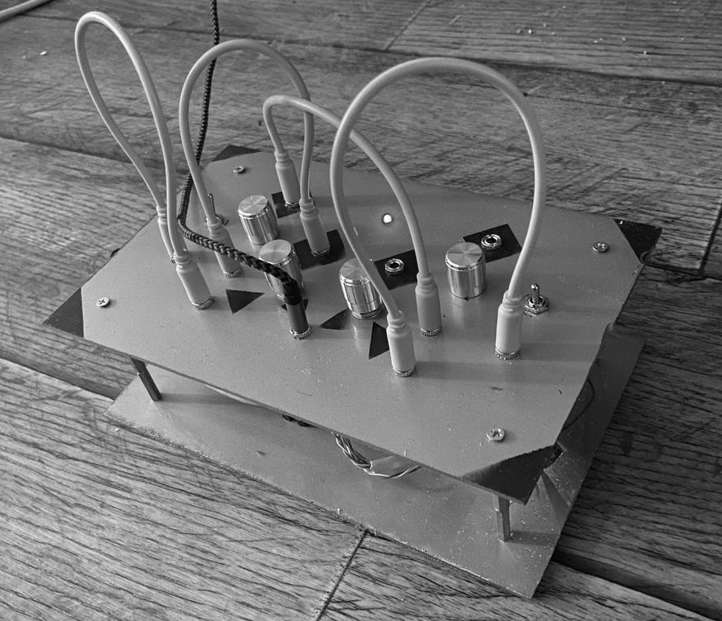
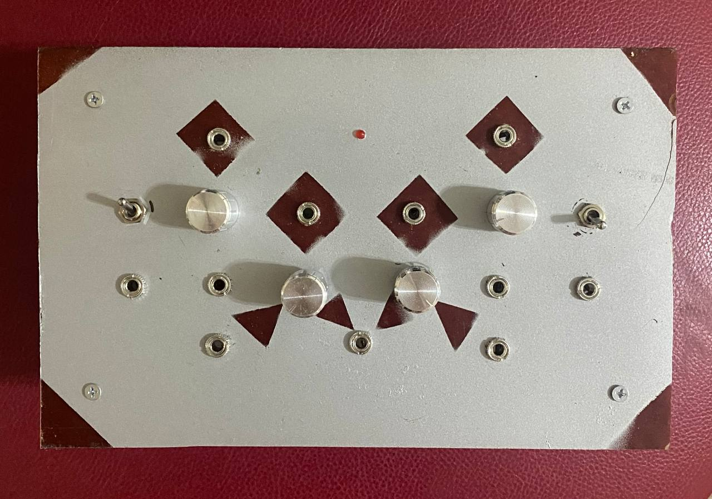

VLADISLAV GENERALOV
AM/FM Semimodular Synthesizer

The idea of this synth is to get the biggest variety of timbres from minimum of sound sources. This synth contains two oscillators with sinewave and squarewave outputs each and a 2channel mixer. Oscillator's pitch and mixer channel volume can be modulated using CV inputs with vactrols.
This instrument can be used as closed system which already has a plenty of patching variants. Or can be used with other sound or CV sources that can expand its capabilities to infinity.
The fact that the synth is battery powered is bringing even more freedom in its usage.

More documentation for this project is coming...